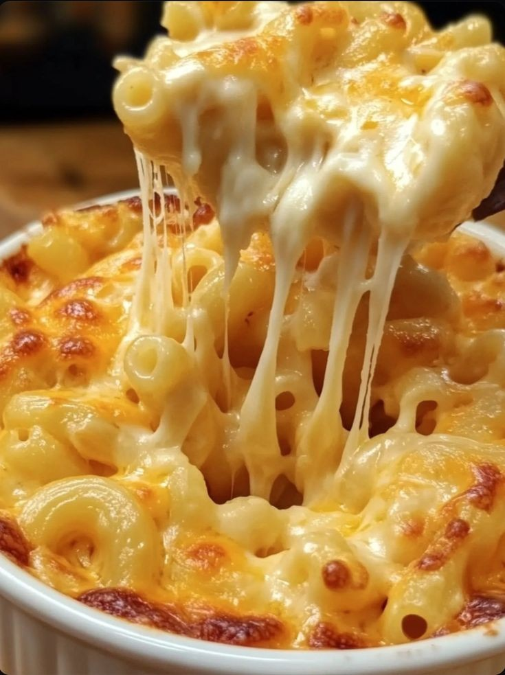

WELLCOME TO MY KITCHEN
Explore and taste diversty in food with me:)
From diffrent snaks to main dishe for your special events .
Recipe of the day is (Backed Mac And Cheese)
INGREDIENTS
- Salt
- Vegtable Oil
- Macaroni
- Milk
- Butter
- Flour
- Black Pepper
- Tomatoas
oil and salt after a while add the Macaroni leave it to boille for 20 minute
take it out of water and add some cheese and vegetable and let it backe for 15M
on the stove. take it out and now you have a tasty Mac and Cheese.

Full Recipe